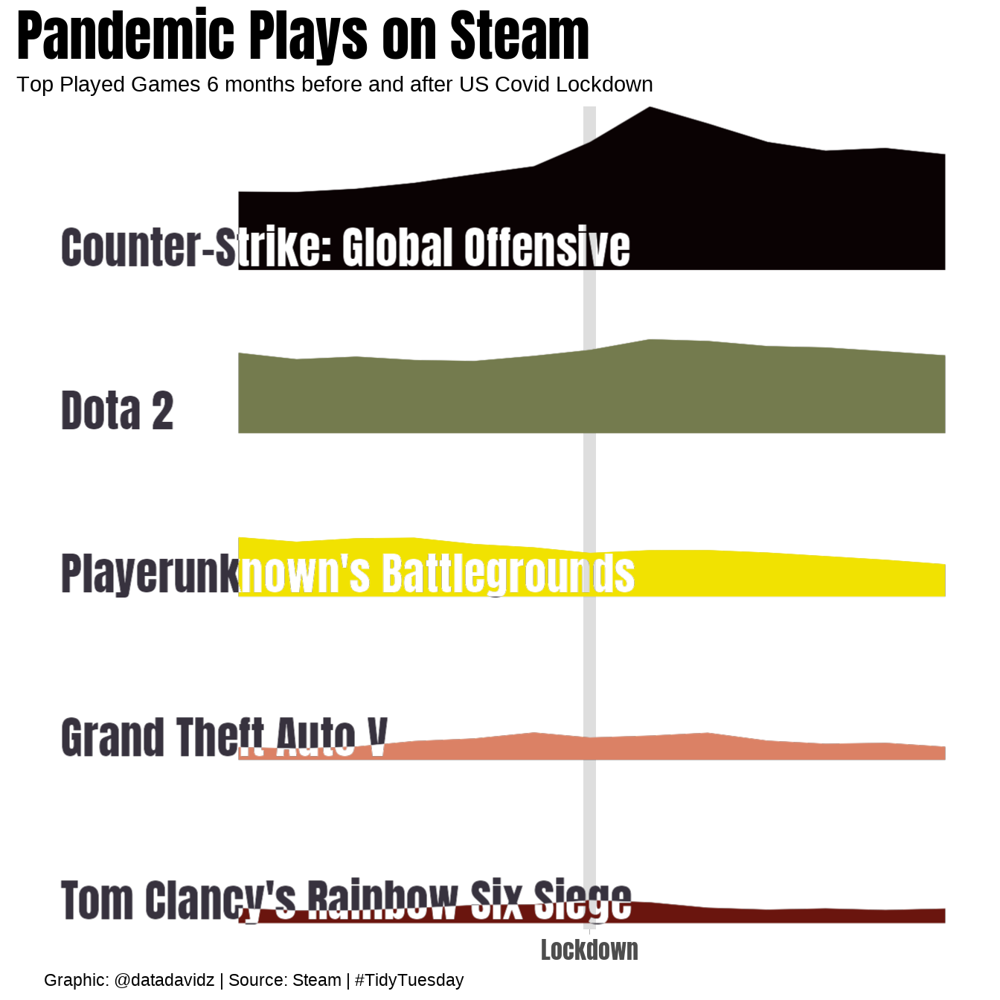

TidyTuesday: Steam Games
Posted on March 16, 2021
A quick analysis of the weekly #TidyTuesday dataset organized by the R4DS Online Learning Community. My approach is to apply my data science skills to explore one question I have about the data and generate a visualization that addresses this question. The main purpose for me is to practice and try out new things. I am never completely satisfied with the end result but I do the best I can in a short period of time.
What I learned this week about R and the Tidyverse
- Creating a stacked ridgeline plot using the ggridges package
- Integrating text overlapping with the plot using the ggfx package
Brief explanation of the dataset
This dataset came from Steam which is an online gaming platform. The dataset contains the game titles and average players by month during the time period from 2012-2021. Additional information is available on the peak number of players, average as a percentage of the peak and gain in average players compared to the previous month. Of course, data is only available following its release date on the platform.
Wrangle
Initial conclusions from exploring the dataset:
- 1258 different game names
- Data available from 2012-2021 but amount of data is increasing over time except 2021 is partial
- Some of the game names have a different encoding and may require cleanup
- A surge in usage was noted in many of the games around March 2020 (US Covid-19 lockdown)
In the first analysis, I explored the games with the biggest gain in usage in March 2020.
top_surge_games <- games %>%
filter(month == "March" & year == 2020) %>%
arrange(desc(gain)) %>%
slice(1:12) %>%
pull(gamename)
top_surge_games
## [1] "Counter-Strike: Global Offensive" "ARK: Survival Evolved"
## [3] "Dota 2" "Football Manager 2020"
## [5] "Path of Exile" "Tom Clancy's Rainbow Six Siege"
## [7] "Destiny 2" "Stellaris"
## [9] "Tomb Raider" "Warframe"
## [11] "RimWorld" "Black Desert Online"
Next, I plot the average users for the top 3 games from 2012-2021.
games %>%
filter(gamename %in% top_surge_games[1:3]) %>%
mutate(year_month = ymd(paste0(year,"/", month, "/", "1"))) %>%
ggplot(aes(x = year_month, y = 1)) +
geom_ridgeline(aes(height = avg, group = factor(gamename), fill = factor(gamename)), alpha = 0.2) +
labs(title = "Steam Games with the Largest Increase in Players in March 2020",
x = "Year",
y = "Average # of Players",
fill = "Steam Game"
)

The top two games, CS:GO and Dota 2, are dominant on this platform in more recent years and tends to hide the lower usage games when compared on the same plot. I was interested in creating a stacked, ridgeline plot to avoid the overlap in colors as shown in the above figure for ARK: Survival Evolved.
The top games in terms of average number of players on March 2020 were used for the stacked, ridgeline plot.
top_games <- games %>%
mutate(gamename = str_to_title(gamename)) %>%
filter(month == "March" & year == 2020) %>%
filter(avg > 100000) %>%
pull(gamename)
top_games
## [1] "Counter-Strike: Global Offensive" "Dota 2"
## [3] "Playerunknown's Battlegrounds" "Grand Theft Auto V"
## [5] "Tom Clancy's Rainbow Six Siege"
Create the dataset for the top games for the visualization.
plot_data <- games %>%
mutate(gamename = str_to_title(gamename)) %>%
filter(gamename %in% top_games[1:5]) %>%
mutate(gamename = factor(gamename, rev(top_games[1:5]))) %>%
mutate(year_month = ymd(paste0(year,"/", month, "/", "1"))) %>%
filter(year_month <= ymd("2020-9-01") & year_month >= ymd("2019-09-01")) %>%
group_by(gamename) %>%
arrange(gamename, year_month) %>%
mutate(idx = row_number())
Create the game title text for the graphic and add the plot locations.
plot_labels <- plot_data %>%
group_by(gamename) %>%
summarize(idx = 1,
avg = 0,
year_month = ymd("2019-06-01"),
.groups = "drop")
Visualize
The plot is created as different layers using the ggfx package. The reference layer is the text graphic for the game titles. The blended layer is for the ridgeline plots. The geom_density_ridges element is used to create the stacked ridgeline plots. The line marking the lockdown time was created by setting a gridline with specific break and label.
p <- ggplot() +
as_reference(geom_text(data = plot_labels, aes(x = year_month, y = gamename, label = gamename),
vjust = -0.1, hjust = 0, family = "Anton", size = 8, color = "#37323e"), id = "text") +
with_blend(geom_density_ridges(data = plot_data, aes(y = gamename, x = year_month, height = avg, group = gamename,
color = gamename, fill = gamename), stat = "identity", size = 0.1, alpha = 1,
show.legend = FALSE, scale = 1),
bg_layer = "text", blend_type = "xor") +
fishualize::scale_fill_fish_d(option = "Aulostomus_chinensis") +
fishualize::scale_color_fish_d(option = "Aulostomus_chinensis") +
scale_y_discrete(expand = c(0.01, 0)) +
scale_x_continuous(breaks = c(ymd("2020-03-01")), labels = "Lockdown") +
theme(axis.text.x = element_text(family = "Anton", size = 12),
axis.text.y = element_blank(),
axis.ticks.y = element_blank(),
panel.grid.major.x = element_line(size = 3),
panel.grid.major.y = element_blank(),
panel.border = element_blank(),
plot.title = element_text(family = "Anton", size = 28),
plot.caption = element_text(hjust = 0.05)) +
labs(title = "Pandemic Plays on Steam",
subtitle = "Top Played Games 6 months before and after US Covid Lockdown",
x = NULL,
y = NULL,
caption = "Graphic: @datadavidz | Source: Steam | #TidyTuesday")
p

Summary
The overall goal of creating a stacked ridgeline plot to show the change in number of players before and after lockdown was successful. It was a challenging dataset to put on one plot because just a few games dominate the usage at Steam. Another approach I saw used for this dataset was to take a game series such as NBA2K or Farming Simulator and analyze the popularity of different editions over time.
LS0tDQpvdXRwdXQ6IA0KICBodG1sX2RvY3VtZW50Og0KICAgIGNvZGVfZG93bmxvYWQ6IHRydWUNCiAgICBpbmNsdWRlczoNCiAgICAgIGFmdGVyX2JvZHk6IGZvb3Rlci5odG1sDQotLS0NCg0KPGJyPg0KDQpgYGB7ciBzZXR1cCwgaW5jbHVkZT1GQUxTRX0NCmtuaXRyOjpvcHRzX2NodW5rJHNldChlY2hvID0gVFJVRSwNCiAgICAgICAgICAgICAgICAgICAgICBmaWcuc2hvd3RleHQgPSBUUlVFKQ0KDQpsaWJyYXJ5KHRpZHl2ZXJzZSkNCmxpYnJhcnkobHVicmlkYXRlKQ0KbGlicmFyeShnZ3JpZGdlcykNCmxpYnJhcnkoc2hvd3RleHQpDQpsaWJyYXJ5KGdnZngpDQoNCmZvbnRfYWRkKCJBbnRvbiIsICJBbnRvbi1SZWd1bGFyLnR0ZiIpDQpzaG93dGV4dF9hdXRvKCkNCg0KdGhlbWVfc2V0KHRoZW1lX2xpZ2h0KCkpDQpgYGANCg0KIyMgKipUaWR5VHVlc2RheTogU3RlYW0gR2FtZXMqKg0KDQoqUG9zdGVkIG9uIE1hcmNoIDE2LCAyMDIxKg0KDQpBIHF1aWNrIGFuYWx5c2lzIG9mIHRoZSB3ZWVrbHkgW1wjVGlkeVR1ZXNkYXldKGh0dHA6Ly9naXRodWIuY29tL3Jmb3JkYXRhc2NpZW5jZS90aWR5dHVlc2RheSkgZGF0YXNldCBvcmdhbml6ZWQgYnkgdGhlIFI0RFMgT25saW5lIExlYXJuaW5nIENvbW11bml0eS4gTXkgYXBwcm9hY2ggaXMgdG8gYXBwbHkgbXkgZGF0YSBzY2llbmNlIHNraWxscyB0byBleHBsb3JlIG9uZSBxdWVzdGlvbiBJIGhhdmUgYWJvdXQgdGhlIGRhdGEgYW5kIGdlbmVyYXRlIGEgdmlzdWFsaXphdGlvbiB0aGF0IGFkZHJlc3NlcyB0aGlzIHF1ZXN0aW9uLiBUaGUgbWFpbiBwdXJwb3NlIGZvciBtZSBpcyB0byBwcmFjdGljZSBhbmQgdHJ5IG91dCBuZXcgdGhpbmdzLiBJIGFtIG5ldmVyIGNvbXBsZXRlbHkgc2F0aXNmaWVkIHdpdGggdGhlIGVuZCByZXN1bHQgYnV0IEkgZG8gdGhlIGJlc3QgSSBjYW4gaW4gYSBzaG9ydCBwZXJpb2Qgb2YgdGltZS4NCg0KKipXaGF0IEkgbGVhcm5lZCB0aGlzIHdlZWsgYWJvdXQgUiBhbmQgdGhlIFRpZHl2ZXJzZSoqDQoNCi0gICBDcmVhdGluZyBhIHN0YWNrZWQgcmlkZ2VsaW5lIHBsb3QgdXNpbmcgdGhlIGdncmlkZ2VzIHBhY2thZ2UNCi0gICBJbnRlZ3JhdGluZyB0ZXh0IG92ZXJsYXBwaW5nIHdpdGggdGhlIHBsb3QgdXNpbmcgdGhlIGdnZnggcGFja2FnZQ0KDQoqKkJyaWVmIGV4cGxhbmF0aW9uIG9mIHRoZSBkYXRhc2V0KioNCg0KVGhpcyBkYXRhc2V0IGNhbWUgZnJvbSBTdGVhbSB3aGljaCBpcyBhbiBvbmxpbmUgZ2FtaW5nIHBsYXRmb3JtLiAgVGhlIGRhdGFzZXQgY29udGFpbnMgdGhlIGdhbWUgdGl0bGVzIGFuZCBhdmVyYWdlIHBsYXllcnMgYnkgbW9udGggZHVyaW5nIHRoZSB0aW1lIHBlcmlvZCBmcm9tIDIwMTItMjAyMS4gIEFkZGl0aW9uYWwgaW5mb3JtYXRpb24gaXMgYXZhaWxhYmxlIG9uIHRoZSBwZWFrIG51bWJlciBvZiBwbGF5ZXJzLCBhdmVyYWdlIGFzIGEgcGVyY2VudGFnZSBvZiB0aGUgcGVhayBhbmQgZ2FpbiBpbiBhdmVyYWdlIHBsYXllcnMgY29tcGFyZWQgdG8gdGhlIHByZXZpb3VzIG1vbnRoLiAgT2YgY291cnNlLCBkYXRhIGlzIG9ubHkgYXZhaWxhYmxlIGZvbGxvd2luZyBpdHMgcmVsZWFzZSBkYXRlIG9uIHRoZSBwbGF0Zm9ybS4NCg0KYGBge3IgTG9hZCwgaW5jbHVkZSA9IEZBTFNFfQ0KI1NhdmUgbmVlZGVkIGRhdGEgaW50byByZHMgZm9yIGJsb2cgcG9zdA0KZ2FtZXMgPC0gcmVhZFJEUygiLi9kYXRhL3R0XzIxMDMxNi5yZHMiKQ0KYGBgDQoNCiMjIyBXcmFuZ2xlDQoNCkluaXRpYWwgY29uY2x1c2lvbnMgZnJvbSBleHBsb3JpbmcgdGhlIGRhdGFzZXQ6DQoNCiogMTI1OCBkaWZmZXJlbnQgZ2FtZSBuYW1lcyAgDQoqIERhdGEgYXZhaWxhYmxlIGZyb20gMjAxMi0yMDIxIGJ1dCBhbW91bnQgb2YgZGF0YSBpcyBpbmNyZWFzaW5nIG92ZXIgdGltZSBleGNlcHQgMjAyMSBpcyBwYXJ0aWFsICANCiogU29tZSBvZiB0aGUgZ2FtZSBuYW1lcyBoYXZlIGEgZGlmZmVyZW50IGVuY29kaW5nIGFuZCBtYXkgcmVxdWlyZSBjbGVhbnVwICANCiogQSBzdXJnZSBpbiB1c2FnZSB3YXMgbm90ZWQgaW4gbWFueSBvZiB0aGUgZ2FtZXMgYXJvdW5kIE1hcmNoIDIwMjAgKFVTIENvdmlkLTE5IGxvY2tkb3duKSAgDQoNCkluIHRoZSBmaXJzdCBhbmFseXNpcywgSSBleHBsb3JlZCB0aGUgZ2FtZXMgd2l0aCB0aGUgYmlnZ2VzdCBnYWluIGluIHVzYWdlIGluIE1hcmNoIDIwMjAuDQpgYGB7cn0NCnRvcF9zdXJnZV9nYW1lcyA8LSBnYW1lcyAlPiUNCiAgZmlsdGVyKG1vbnRoID09ICJNYXJjaCIgJiB5ZWFyID09IDIwMjApICU+JQ0KICBhcnJhbmdlKGRlc2MoZ2FpbikpICU+JQ0KICBzbGljZSgxOjEyKSAlPiUNCiAgcHVsbChnYW1lbmFtZSkNCg0KdG9wX3N1cmdlX2dhbWVzDQpgYGANCg0KTmV4dCwgSSBwbG90IHRoZSBhdmVyYWdlIHVzZXJzIGZvciB0aGUgdG9wIDMgZ2FtZXMgZnJvbSAyMDEyLTIwMjEuDQpgYGB7cn0NCmdhbWVzICU+JQ0KICBmaWx0ZXIoZ2FtZW5hbWUgJWluJSB0b3Bfc3VyZ2VfZ2FtZXNbMTozXSkgJT4lDQogIG11dGF0ZSh5ZWFyX21vbnRoID0geW1kKHBhc3RlMCh5ZWFyLCIvIiwgbW9udGgsICIvIiwgIjEiKSkpICU+JQ0KICBnZ3Bsb3QoYWVzKHggPSB5ZWFyX21vbnRoLCB5ID0gMSkpICsNCiAgZ2VvbV9yaWRnZWxpbmUoYWVzKGhlaWdodCA9IGF2ZywgZ3JvdXAgPSBmYWN0b3IoZ2FtZW5hbWUpLCBmaWxsID0gZmFjdG9yKGdhbWVuYW1lKSksIGFscGhhID0gMC4yKSArDQogIGxhYnModGl0bGUgPSAiU3RlYW0gR2FtZXMgd2l0aCB0aGUgTGFyZ2VzdCBJbmNyZWFzZSBpbiBQbGF5ZXJzIGluIE1hcmNoIDIwMjAiLA0KICAgICAgIHggPSAiWWVhciIsDQogICAgICAgeSA9ICJBdmVyYWdlICMgb2YgUGxheWVycyIsIA0KICAgICAgIGZpbGwgPSAiU3RlYW0gR2FtZSINCiAgICAgICApDQogIA0KYGBgDQoNClRoZSB0b3AgdHdvIGdhbWVzLCBDUzpHTyBhbmQgRG90YSAyLCBhcmUgZG9taW5hbnQgb24gdGhpcyBwbGF0Zm9ybSBpbiBtb3JlIHJlY2VudCB5ZWFycyBhbmQgdGVuZHMgdG8gaGlkZSB0aGUgbG93ZXIgdXNhZ2UgZ2FtZXMgd2hlbiBjb21wYXJlZCBvbiB0aGUgc2FtZSBwbG90LiAgSSB3YXMgaW50ZXJlc3RlZCBpbiBjcmVhdGluZyBhIHN0YWNrZWQsIHJpZGdlbGluZSBwbG90IHRvIGF2b2lkIHRoZSBvdmVybGFwIGluIGNvbG9ycyBhcyBzaG93biBpbiB0aGUgYWJvdmUgZmlndXJlIGZvciBBUks6IFN1cnZpdmFsIEV2b2x2ZWQuDQoNClRoZSB0b3AgZ2FtZXMgaW4gdGVybXMgb2YgYXZlcmFnZSBudW1iZXIgb2YgcGxheWVycyBvbiBNYXJjaCAyMDIwIHdlcmUgdXNlZCBmb3IgdGhlIHN0YWNrZWQsIHJpZGdlbGluZSBwbG90Lg0KYGBge3J9DQp0b3BfZ2FtZXMgPC0gZ2FtZXMgJT4lDQogIG11dGF0ZShnYW1lbmFtZSA9IHN0cl90b190aXRsZShnYW1lbmFtZSkpICU+JQ0KICBmaWx0ZXIobW9udGggPT0gIk1hcmNoIiAmIHllYXIgPT0gMjAyMCkgJT4lDQogIGZpbHRlcihhdmcgPiAxMDAwMDApICU+JQ0KICBwdWxsKGdhbWVuYW1lKQ0KDQp0b3BfZ2FtZXMNCmBgYA0KDQoNCkNyZWF0ZSB0aGUgZGF0YXNldCBmb3IgdGhlIHRvcCBnYW1lcyBmb3IgdGhlIHZpc3VhbGl6YXRpb24uDQpgYGB7cn0NCnBsb3RfZGF0YSA8LSBnYW1lcyAlPiUNCiAgbXV0YXRlKGdhbWVuYW1lID0gc3RyX3RvX3RpdGxlKGdhbWVuYW1lKSkgJT4lDQogIGZpbHRlcihnYW1lbmFtZSAlaW4lIHRvcF9nYW1lc1sxOjVdKSAlPiUNCiAgbXV0YXRlKGdhbWVuYW1lID0gZmFjdG9yKGdhbWVuYW1lLCByZXYodG9wX2dhbWVzWzE6NV0pKSkgJT4lDQogIG11dGF0ZSh5ZWFyX21vbnRoID0geW1kKHBhc3RlMCh5ZWFyLCIvIiwgbW9udGgsICIvIiwgIjEiKSkpICU+JQ0KICBmaWx0ZXIoeWVhcl9tb250aCA8PSB5bWQoIjIwMjAtOS0wMSIpICYgeWVhcl9tb250aCA+PSB5bWQoIjIwMTktMDktMDEiKSkgJT4lDQogIGdyb3VwX2J5KGdhbWVuYW1lKSAlPiUNCiAgYXJyYW5nZShnYW1lbmFtZSwgeWVhcl9tb250aCkgJT4lDQogIG11dGF0ZShpZHggPSByb3dfbnVtYmVyKCkpDQpgYGANCg0KQ3JlYXRlIHRoZSBnYW1lIHRpdGxlIHRleHQgZm9yIHRoZSBncmFwaGljIGFuZCBhZGQgdGhlIHBsb3QgbG9jYXRpb25zLg0KYGBge3J9DQpwbG90X2xhYmVscyA8LSBwbG90X2RhdGEgJT4lIA0KICBncm91cF9ieShnYW1lbmFtZSkgJT4lIA0KICBzdW1tYXJpemUoaWR4ID0gMSwNCiAgICAgICAgICAgIGF2ZyA9IDAsDQogICAgICAgICAgICB5ZWFyX21vbnRoID0geW1kKCIyMDE5LTA2LTAxIiksDQogICAgICAgICAgICAuZ3JvdXBzID0gImRyb3AiKQ0KYGBgDQoNCiMjIyBWaXN1YWxpemUNCg0KVGhlIHBsb3QgaXMgY3JlYXRlZCBhcyBkaWZmZXJlbnQgbGF5ZXJzIHVzaW5nIHRoZSBnZ2Z4IHBhY2thZ2UuICBUaGUgcmVmZXJlbmNlIGxheWVyIGlzIHRoZSB0ZXh0IGdyYXBoaWMgZm9yIHRoZSBnYW1lIHRpdGxlcy4gIFRoZSBibGVuZGVkIGxheWVyIGlzIGZvciB0aGUgcmlkZ2VsaW5lIHBsb3RzLiAgVGhlIGdlb21fZGVuc2l0eV9yaWRnZXMgZWxlbWVudCBpcyB1c2VkIHRvIGNyZWF0ZSB0aGUgc3RhY2tlZCByaWRnZWxpbmUgcGxvdHMuICBUaGUgbGluZSBtYXJraW5nIHRoZSBsb2NrZG93biB0aW1lIHdhcyBjcmVhdGVkIGJ5IHNldHRpbmcgYSBncmlkbGluZSB3aXRoIHNwZWNpZmljIGJyZWFrIGFuZCBsYWJlbC4NCg0KYGBge3IsIGZpZy53aWR0aCA9IDcsIGZpZy5oZWlnaHQgPSA3fQ0KcCA8LSBnZ3Bsb3QoKSArDQogIGFzX3JlZmVyZW5jZShnZW9tX3RleHQoZGF0YSA9IHBsb3RfbGFiZWxzLCBhZXMoeCA9IHllYXJfbW9udGgsIHkgPSBnYW1lbmFtZSwgbGFiZWwgPSBnYW1lbmFtZSksDQogICAgICAgICAgICAgICAgdmp1c3QgPSAtMC4xLCBoanVzdCA9IDAsIGZhbWlseSA9ICJBbnRvbiIsIHNpemUgPSA4LCBjb2xvciA9ICIjMzczMjNlIiksIGlkID0gInRleHQiKSArDQogIHdpdGhfYmxlbmQoZ2VvbV9kZW5zaXR5X3JpZGdlcyhkYXRhID0gcGxvdF9kYXRhLCBhZXMoeSA9IGdhbWVuYW1lLCB4ID0geWVhcl9tb250aCwgaGVpZ2h0ID0gYXZnLCBncm91cCA9IGdhbWVuYW1lLCANCiAgICAgICAgICAgICAgICAgICAgICAgICAgICAgICAgICAgICAgICAgIGNvbG9yID0gZ2FtZW5hbWUsIGZpbGwgPSBnYW1lbmFtZSksIHN0YXQgPSAiaWRlbnRpdHkiLCBzaXplID0gMC4xLCBhbHBoYSA9IDEsIA0KICAgICAgICAgICAgICAgICAgICAgICAgICAgICAgICAgICAgICAgICAgc2hvdy5sZWdlbmQgPSBGQUxTRSwgc2NhbGUgPSAxKSwgDQogICAgICAgICAgICAgICAgICAgICAgICAgICAgICAgICAgICAgICAgICBiZ19sYXllciA9ICJ0ZXh0IiwgYmxlbmRfdHlwZSA9ICJ4b3IiKSArDQogIGZpc2h1YWxpemU6OnNjYWxlX2ZpbGxfZmlzaF9kKG9wdGlvbiA9ICJBdWxvc3RvbXVzX2NoaW5lbnNpcyIpICsNCiAgZmlzaHVhbGl6ZTo6c2NhbGVfY29sb3JfZmlzaF9kKG9wdGlvbiA9ICJBdWxvc3RvbXVzX2NoaW5lbnNpcyIpICsNCiAgc2NhbGVfeV9kaXNjcmV0ZShleHBhbmQgPSBjKDAuMDEsIDApKSArDQogIHNjYWxlX3hfY29udGludW91cyhicmVha3MgPSBjKHltZCgiMjAyMC0wMy0wMSIpKSwgbGFiZWxzID0gIkxvY2tkb3duIikgKw0KICB0aGVtZShheGlzLnRleHQueCA9IGVsZW1lbnRfdGV4dChmYW1pbHkgPSAiQW50b24iLCBzaXplID0gMTIpLA0KICAgICAgICBheGlzLnRleHQueSA9IGVsZW1lbnRfYmxhbmsoKSwNCiAgICAgICAgYXhpcy50aWNrcy55ID0gZWxlbWVudF9ibGFuaygpLA0KICAgICAgICBwYW5lbC5ncmlkLm1ham9yLnggPSBlbGVtZW50X2xpbmUoc2l6ZSA9IDMpLA0KICAgICAgICBwYW5lbC5ncmlkLm1ham9yLnkgPSBlbGVtZW50X2JsYW5rKCksDQogICAgICAgIHBhbmVsLmJvcmRlciA9IGVsZW1lbnRfYmxhbmsoKSwNCiAgICAgICAgcGxvdC50aXRsZSA9IGVsZW1lbnRfdGV4dChmYW1pbHkgPSAiQW50b24iLCBzaXplID0gMjgpLA0KICAgICAgICBwbG90LmNhcHRpb24gPSBlbGVtZW50X3RleHQoaGp1c3QgPSAwLjA1KSkgKw0KICBsYWJzKHRpdGxlID0gIlBhbmRlbWljIFBsYXlzIG9uIFN0ZWFtIiwNCiAgICAgICBzdWJ0aXRsZSA9ICJUb3AgUGxheWVkIEdhbWVzIDYgbW9udGhzIGJlZm9yZSBhbmQgYWZ0ZXIgVVMgQ292aWQgTG9ja2Rvd24iLA0KICAgICAgIHggPSBOVUxMLA0KICAgICAgIHkgPSBOVUxMLA0KICAgICAgIGNhcHRpb24gPSAiR3JhcGhpYzogQGRhdGFkYXZpZHogfCBTb3VyY2U6IFN0ZWFtIHwgI1RpZHlUdWVzZGF5IikNCg0KDQpwDQpgYGANCg0KIyMjIFN1bW1hcnkNCg0KVGhlIG92ZXJhbGwgZ29hbCBvZiBjcmVhdGluZyBhIHN0YWNrZWQgcmlkZ2VsaW5lIHBsb3QgdG8gc2hvdyB0aGUgY2hhbmdlIGluIG51bWJlciBvZiBwbGF5ZXJzIGJlZm9yZSBhbmQgYWZ0ZXIgbG9ja2Rvd24gd2FzIHN1Y2Nlc3NmdWwuICBJdCB3YXMgYSBjaGFsbGVuZ2luZyBkYXRhc2V0IHRvIHB1dCBvbiBvbmUgcGxvdCBiZWNhdXNlIGp1c3QgYSBmZXcgZ2FtZXMgZG9taW5hdGUgdGhlIHVzYWdlIGF0IFN0ZWFtLiAgQW5vdGhlciBhcHByb2FjaCBJIHNhdyB1c2VkIGZvciB0aGlzIGRhdGFzZXQgd2FzIHRvIHRha2UgYSBnYW1lIHNlcmllcyBzdWNoIGFzIE5CQTJLIG9yIEZhcm1pbmcgU2ltdWxhdG9yIGFuZCBhbmFseXplIHRoZSBwb3B1bGFyaXR5IG9mIGRpZmZlcmVudCBlZGl0aW9ucyBvdmVyIHRpbWUuDQo=